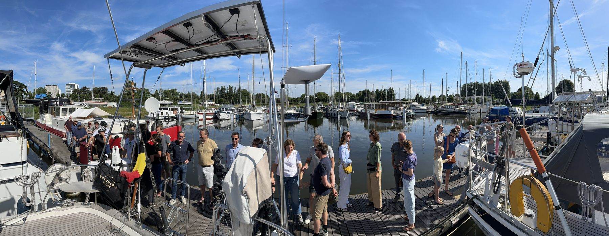
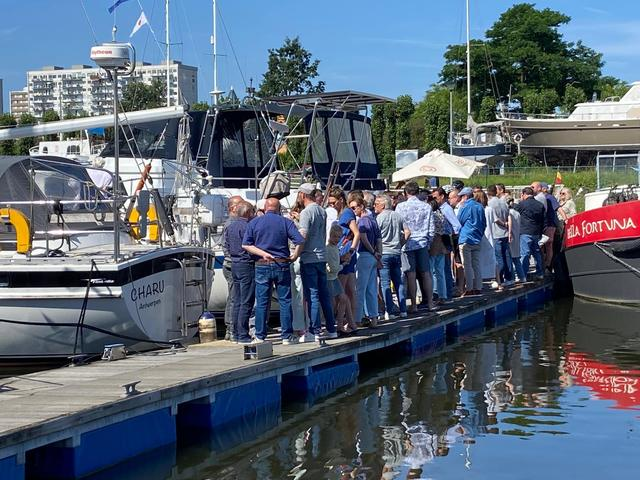
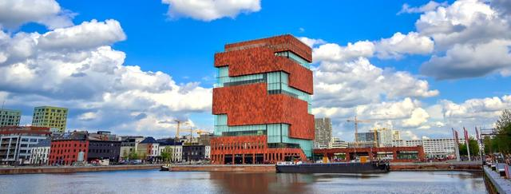

19 mei 2025
La Grande Finale
Mijn schippershartje wordt nog altijd heerlijk warm van binnen als ik terugdenk aan de prachtige menigte die ons op LO is komen uitzwaaien in juni volgend jaar... vandaar...

Niet dat ik nu al popel naar het einde van de Tournée Générale, maar omdat ik links en rechts wel wat interesse hoor van mensen die willen kijken of de Nomad in Antwerpen deze keer wel tot aan het MAS geraakt, bij deze al even een "save the date".

Het plan is om donderdagavond 14 augustus rond 19h door de Kattendijksluis te varen om dan rond 20h in het Willemdok te belanden. Dit alles onder voorbehoud van een beetje gunstige weersomstandigheden en bereidwillige sluiswachters...
Wij laden de Nomad ijskasten vol met lekkere drankjes zodat we de TG op een waardige manier kunnen afsluiten.
Tot we weer vertrekken 😱😜